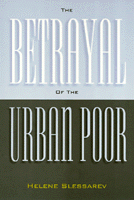

<body bgcolor="#FFFFFF" text="#000000" link="#0000FF" vlink="#CC0000" alink="#CC0000"><center><hr width="350" size="1" align="center" noshade>A devastating account of inadequate attempts to provide economic equality for the urban poor<hr width="350" size="1" align="center" noshade><p><a href="https://cdcshoppingcart.uchicago.edu/Cart/ChicagoBook.aspx?ISBN=9781566395427&&PRESS=temple" target="_top">Buy this book!</a> | <a href="https://cdcshoppingcart.uchicago.edu/Cart/Cart.aspx?PRESS=temple" target="_top">View Cart</a> | <a href="https://cdcshoppingcart.uchicago.edu/Cart/Cart.aspx?PRESS=temple" target="_top">Check Out</a></p><p></p></center><!--none//--><h1>The Betrayal of the Urban Poor</h1>
<h3>Helene Slessarev</h3>
<P>cloth 1-56639-542-9 $71.50, May 97, <FONT COLOR=#990033>Out of Stock Unavailable</FONT>
<br>paper 1-56639-543-7 $30.95, May 97, <FONT COLOR=#990033>Available</FONT>
<BR> 256 pp
5.5x8.25
3&nbsp;tables
</P><p>Written by a Chicago political insider, this book is a history from 1960 to the present of how policies allegedly designed to promote the welfare of the urban poor have been half-hearted. Slessarev documents how little the Civil Rights Act of 1964 and the War on Poverty finally provided for the urban poor, how grudging were the concessions of even progressive labor unions, and how in recent times black politicians have mainly catered to the middle class.
<p>The story is told on both the national level and the Chicago level. Slessarev shows the weakness of job-training programs devised at the federal level, as well as the intricate ways in which the building trades locked out minorities from apprenticeship programs and jobs in cities like Chicago. She reveals how assistance to minority businesses has been yet another failed promise. In the end the programs have amounted to trickle-down economics, with devastation visible where neighborhood cornerstores used to be. Slessarev demonstrates how structures of so-called economic opportunity have failed time and time again to meet the basic needs of the urban poor.
<p>Despite this dismal history, conservative social critics blame the poor themselves. <i>The Betrayal of the Urban Poor</i> challenges the notion that excesses in government generosity destroyed the work ethic in poor minority communities and therefore is responsible for the growth in poverty. Slessarev asserts that this gross distortion is driven more by an underlying anti-government political agenda than historical accuracy. When we set aside all rhetoric about equal opportunity, the United States has made, at best, only a partial commitment to equality.
<BR>&nbsp;<h2>Excerpt</h2><P>Excerpt available at <a href="http://www.temple.edu/tempress">www.temple.edu/tempress</a></p>
<BR>&nbsp;<h2>Reviews</h2>
<p><i>"[T]he book should be required reading for every new student of urban politics. For the many undergraduates who may ask themselves or their instructors why a particular program was needed, Slessarev provides a full and compelling answer."</i>
<br>&#151<b><i><a href="../reviews/921_review.html">American Political Science Review</a></i></b>
<BR>&nbsp;<h2>Contents</h2><P>
<p>Preface
<br>Acknowledgments
<br>1. A Partial Commitment to Equality
<br>2. Concessions from the Start
<br>3. The Poor Get Training but No Jobs
<br>4. The Unions Retard Access to Jobs
<br>5. The Struggle over Access to Chicago's Building Trades
<br>6. Trickle-Down Economic Development
<br>7. Chicago's New Black Political Establishment
<br>8. Chicago's Redevelopment Lacks Attention to Jobs
<br>Notes
<br>Index
</P><BR>&nbsp;<H2>About the Author(s)</H2>
<P><B>Helene Slessarev</B> is Director of the Urban Studies Program at Wheaton College and a public policy consultant. In 1988 she was the Midwest volunteer coordinator for Jesse Jackson's 1988 Presidential campaign, and she continues to be active in local political campaigns. Slessarev has worked as the economics specialist at the Chicago Urban League and has researched the history of discrimination against minority businesses for the City of Chicago.</P>
<BR><H2>Subject Categories</H2>
<p><A HREF="/tempress/urban.html" TARGET="_top">Urban Studies</a>
<BR><A HREF="/tempress/african.html" TARGET="_top">African American Studies</a>
<BR><A HREF="/tempress/political.html" TARGET="_top">Political Science and Public Policy</a>
</p>
<p align="center"><a href="https://cdcshoppingcart.uchicago.edu/Cart/ChicagoBook.aspx?ISBN=9781566395427&&PRESS=temple" target="_top">Buy this book!</a> | <a href="https://cdcshoppingcart.uchicago.edu/Cart/Cart.aspx?PRESS=temple" target="_top">View Cart</a> | <a href="https://cdcshoppingcart.uchicago.edu/Cart/Cart.aspx?PRESS=temple" target="_top">Check Out</a></p><p><font face="Arial" size="1"><a href="copyright.html" onMouseOver="window.status='Web Copyright Policy';return true;" onMouseOut="window.status=''" title="Web Copyright Policy">&copy;</a> 2015 <a href="http://www.temple.edu" target="new" onMouseOver="window.status='Link to Temple University home page';return true;" onMouseOut="window.status=''" title="Link to Temple University home page">Temple University</a>. All Rights Reserved. http://www.temple.edu/tempress/titles/921_reg.html</font></p>